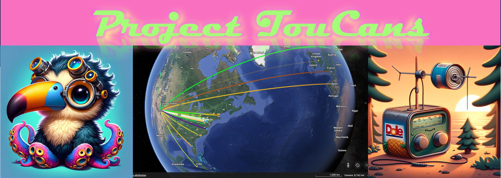

Station Setup
TouCans Inet Address:
TouCans World Location
Longitude:
Latitude:
tx_state:
UTC offset:
Auto Keyer
Keyer message:
Repeat message every x seconds:
Start
Stop
Custom Message
Message to send:
Send
POTA/SOTA
Call:
rst:
Start POTA
rx_rst:
rx_qth:
End and Log
Log:
SDR and RBN